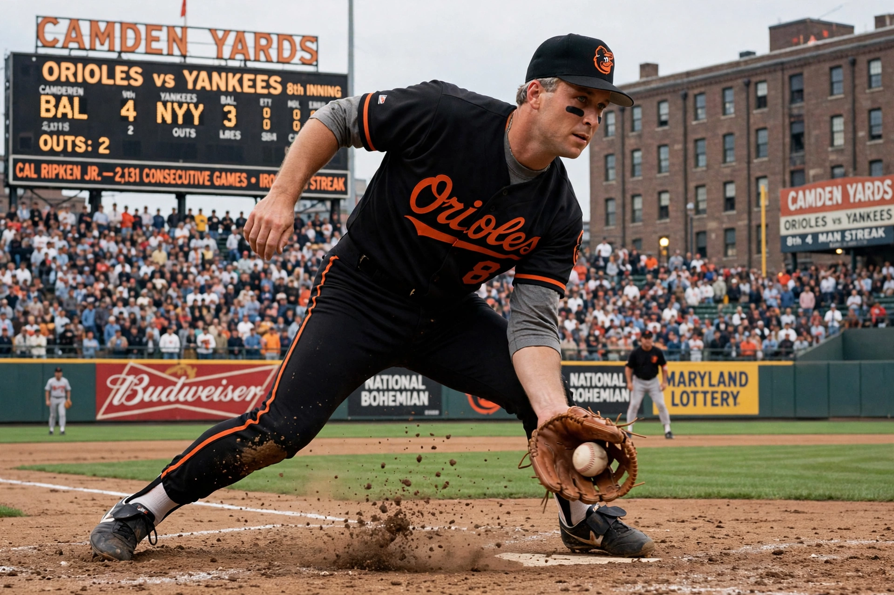

Calvin Edwin Ripken Jr. (born August 24, 1960), nicknamed 'the Iron Man', is an American former baseball shortstop and third baseman who played 21 seasons for the Baltimore Orioles. He is famous for breaking Lou Gehrig's record by playing in 2,632 consecutive games.

Son of manager Cal Ripken Sr., Ripken debuted in 1981 and helped the Orioles win the 1983 World Series. At 6 ft 4 in he redefined the shortstop position with power hitting. On September 6, 1995 he played his 2,131st consecutive game, passing Gehrig in a celebrated night at Camden Yards; he voluntarily ended the streak at 2,632 in 1998. A 19-time All-Star and two-time Gold Glove winner, he moved to third base late in his career and retired in 2001.
Ripken was elected to the Baseball Hall of Fame in 2007 on his first ballot with one of the highest vote shares ever at the time. Afterwards he built youth baseball programmes through Ripken Baseball and authored books on the game. See Baltimore Orioles and Consecutive games.